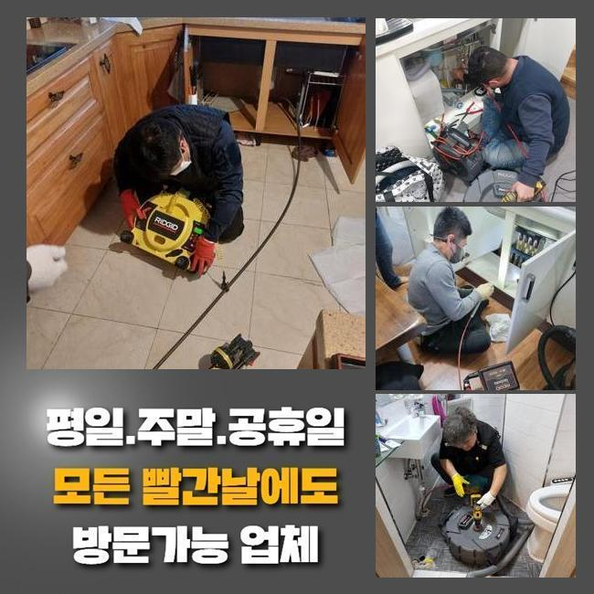
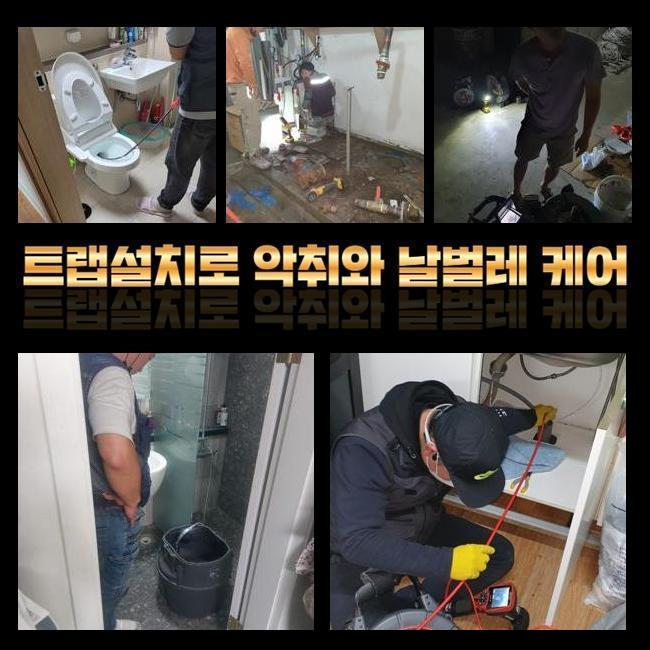
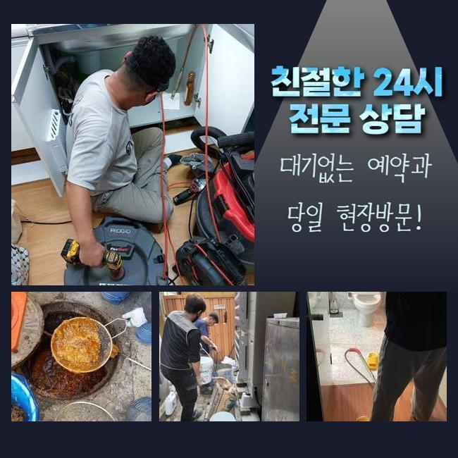
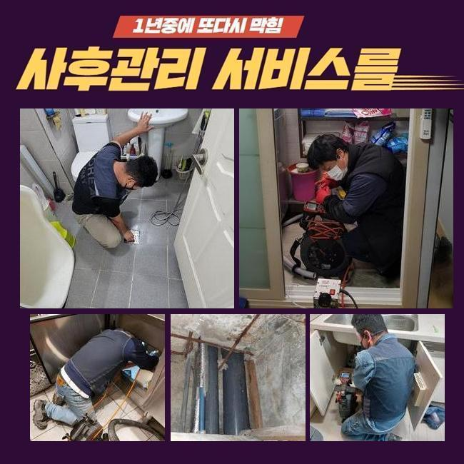
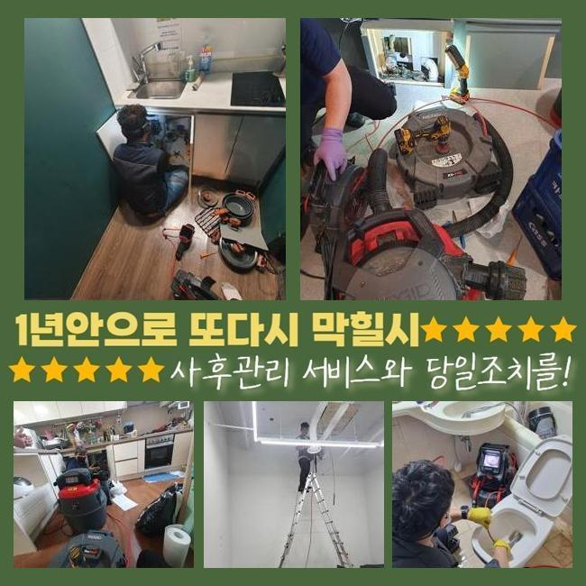
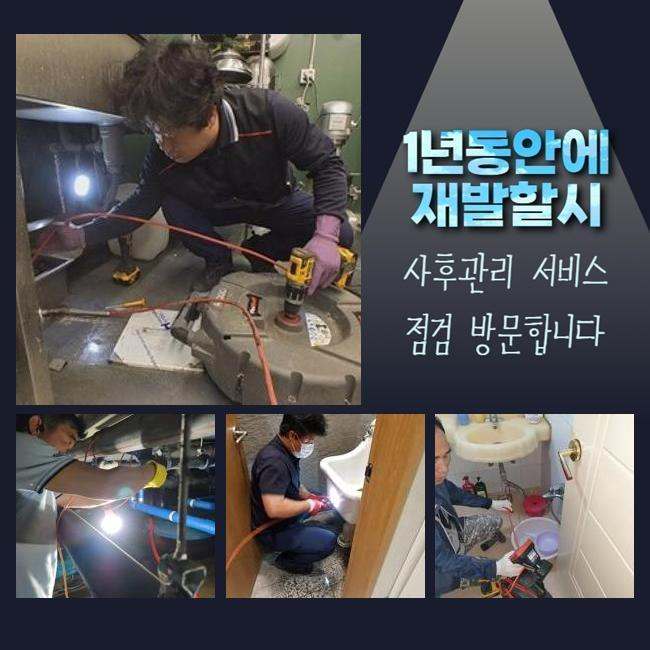
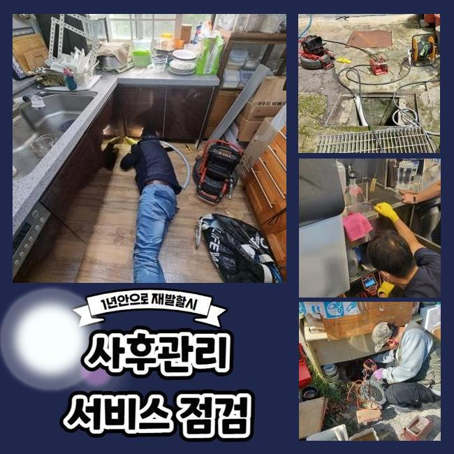

🏠 안산 안산동세탁실막힘 반월동 배관내시경카메라 통수전문
안산 싱크대막힘 전문 시공 후기

📋 작업 개요
- 위치: 안산
- 서비스 유형: 싱크대막힘, 하수구막힘, 배관막힘, 집수정막힘, 역류해결, 뚫는업체, 배관청소, 고압세척
- 작업 일시: 2025. 1. 7. 22:59
- 업체명: 하수구수사대 (010-5615-2118)
🔍 문제 상황
안산 안산동세탁실막힘 반월동 배관내시경카메라 통수전문
배관이 막히게 되었을때 가벼운 문제들로 처리된다면 좋은데 방치하게된다면 2차적인 피해들로 불거질수있어요
빠르게 대응하는것이 좋은 방법이지만 만의하나 방치하신다면 업체를호출해 문제증상을 처리하시는것이 좋겠습니다
이번에 방문했던곳은 상가건물로 이루어져 있었는데 막힘문제가 발생하여 급히 연락주셨어요
이런 문제들이 발생하면 급급한 상황들이 대부분이니 신속히 내방해드려요
상가건물중 음식점에서 막힘문제가 일어난 것인데요
하루지난뒤 영업해야되기에 곤란해하시는 상황이었어요
원인이뭔지 정확히 알아보고자 서둘러서 움직였죠
식당외부와 내부도 살펴봤더니 트렌치하수구와 메인관까지 막혀있는 상태였죠
고객님께 상황과 관련하여 전달드린후 수리에 착수하기로 했는데요
작업착수전 반드시 고객님께 작업과정을 안내하고있죠

🔎 원인 분석
💡 전문가 진단: 정밀 진단 장비를 사용하여 슬러지의 고착 여부를 판명하고 타격/세척 작업을 실시했습니다.
샤프트장비로 내부속에 쌓여있는 잔해물을 분쇄시켰죠
식당이다보니 기름기가 가득해있었죠
조심스레 작업하여 안속에 쌓인것들을 없애주었죠
작업중간에 오염물제거가 깨끗히 진행되는지 배관카메라를 통하여 체크하면서 진행했어요
역류중이던 하수구였으므로 가능한 서둘러서 파손이 발생되지않게 작업했는데 다행인것은 또 다른 피해가없이 역류현상을 바로잡아서 안심했죠
바깥쪽을 작업해준뒤 주방내부쪽으로 장소를 옮겼어요
식당내부에 있는 씽크대쪽이 막혔다고 하여 내시경을 통해 검사를 진행해주었는데요
원인을 조사해보니 기름기들이 석회화되어 막히게된것으로 판단되었죠
석회이물을 없애고자 플렉스샤프트로 분쇄시켰어요
이후엔 분쇄된 찌꺼기들을 석션기로 빨아들이는 작업을 통해 이물제거가 깔끔히 되었죠
배관이 막히는것은 수 많은 원인을통해 발현되지만 확실한원인은 오염물질 때문이죠

🔧 작업 과정
이렇다보니 오염물과 같은것이 배관속으로 투입되지않도록 신경을 써주시는것이 좋고 주기적인 하수구점검을 진행하여 상태가 어떠한지 살펴봐야 한답니다
반복적인 스케일링을 통하여 트렌치관 내부에 쌓여있었던 기름이물과 메인관도 처리해냈죠
집수정부분에도 막힘현상이 있는걸 알아냈어요 이물이 전체적으로 모이는 시설이어서 앞서 처리한 과정으로는 뚫어내기 어렵기에 고압수로 청소해주는 전문장비가 필요했는데요
사용하기전에 의뢰자에게 양해를구한뒤 고압세척을 진행해야하는 필요성에 대하여 상세하게 일러드렸어요
고압세척기는 강한압의 물이 이용되기에 수리기사의 조심성이 필요하답니다
잘못건드릴시 하수구내벽에 손상문제로 불거질수있죠
집수정안에 기름들이 가득차있어 고압세척기를 통해 오염물들을 밀어내준뒤 제거해냈답니다
외부와 내부까지 전부 작업해보니 정상적인 배수상황으로 이루어지는것을 확인했어요
상시로 운영되는 영업장소는 금전적으로 손해가 발생되는것을 알고있기에 주말에도 출동해드려요
배수구망이나 하수도트랩을 설치해 막힘현상과 악취문제를 예방할수있죠
확실하게 처리하는 해결책이라면 막힘징조를 보았을때 발견그즉시 전문업체를 통하여 해결하는것이죠
여러번 말했지만 문제를 방치하시면 물이새거나 역류하는 현상들로 이어진답니다
막힘증세를 처리하고자 자가조치를 여러번 해보셨을거라 생각해요 간단히 시도할수있는 방식을 공개해볼게요
온수의물이나 하수구용액을 적절히 이용하여 하수구에 부어부시고 해결이되지 못한다면 전문업체를 통해 수리를 받아보셔야 한답니다
무리하여 들이 붓는다면 배수구에 파손문제가 발생할 가능성이 있으므로 적절한 양을 통해 시도바래요
어느곳이라도 하수관이 막힐경우 당혹스러울 겁니다
저희들의 경우에는 식당과 가정집등 어떤장소라도 방문해드립니다


✅ 작업 완료
작업에 착수할때 투명히 작업계획을 보여줘야 신뢰가 갈거에요
현장상황을 우선 살핀후 뚫는비용을 확실하게 공개합니다
씽크대나 욕실배관은 간단하게 석션기로만 해결된다면 5만원정도로 책정이되고 있으니 참고하세요!
이밖으로도 궁금증이 있으시면 언제라도 문의주시면 꼼꼼한 응대로 돕도록 할게요!
막힘문제 미루지말고 조속한 대처로 쾌적한 환경을 조성하시길 바랍니다




⚠️ 주방 싱크대 배관 막힘 예방 수칙
- ✅ 기름기가 묻은 식기나 프라이팬은 설거지 전 키친타올로 반드시 기름때를 닦아내세요.
- ✅ 주기적으로 싱크대 개수대에 뜨거운 물을 가득 받아 한 번에 내려 배관 내부 기름을 씻어내세요.
- ✅ 배수구 거름망을 미세한 필터로 사용하시고 음식물 찌꺼기가 틈으로 새어 들지 않게 관리하세요.
- ✅ 베이킹소다와 식초를 뜨거운 물과 함께 일주일에 한 번씩 부어주면 배관 살균과 막힘 예방에 좋습니다.
💡 핵심 정리
- 확실한 장비 작업(내시경 점검 및 샤프트 스케일링)으로 원인을 뿌리 뽑습니다.
- 작업 후 1년 이내에 동일한 부위 재발 시 100% 무상 A/S 서비스를 보장합니다.
- 서울 · 경기 · 인천 전 지역에 24시간 언제든 긴급 출동할 수 있도록 항시 대기 중입니다.
❓ 자주 묻는 질문 (FAQ)
🚨 안산 싱크대막힘 문제로 고민이신가요?
정확한 원인 진단과 확실한 시공으로 재발 없는 해결을 약속드립니다.
24시간 긴급 출동 | 서울 · 경기 · 인천 전지역 | 1년 내 재발 시 무상 A/S